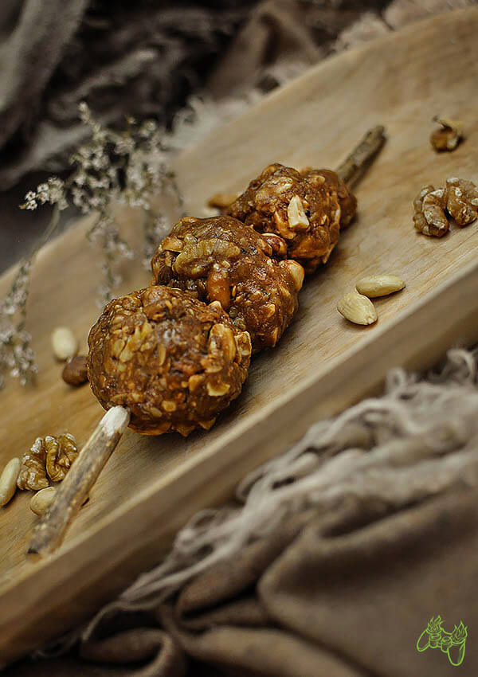

Honey Nut Treat-The Elder Scrolls V: Skyrim

Sweet balls made of nuts and honey
Woah weary traveler, thanks for walking into my inn. I have plenty of food and drink in stock if you fancy yourself an ale or if you'd rather I can whip you up some of my famous Honey Nut Treats. This treat is nuts in various forms, honey, and simple cereals for any traveler to take a break with. Simple, nutritious and tasty.
Ingredients
- 40g (about a handful) mixture of nuts (walnuts, haelnuts, cashews)
- 30g peeled unsalted peanuts
- 60g dry oatmeal
- 3 tbsps multiflower honey
- 3 tbsps peanut butter
Steps
- Cut nuts roughly into smaller pieces – walnuts into quarters, hazelnuts and cashews in half.
- Add honey and peanut butter to the saucepan. Heat on low power for about 1 minute, stirring constantly. When the mass becomes smooth and combined, turn off the heater.
- Put nuts, peeled peanuts and oatmeal into a warm honey mass. Mix everything thoroughly. When the mixture has cooled down a little, put it under the cover for 30 minutes in the fridge.
- Take mass out of the fridge and form balls of various sizes, which should be put on sticks. Chill them in the fridge.
- Serve hot with an additional potion of butter and powdered sugar.
- Remove Honey Nut Treat from fridge about 30 minutes before serving. It goes well with a mug of dark,bitter beer.